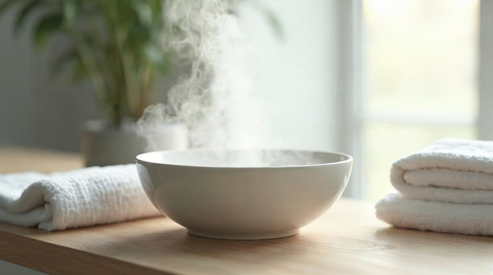
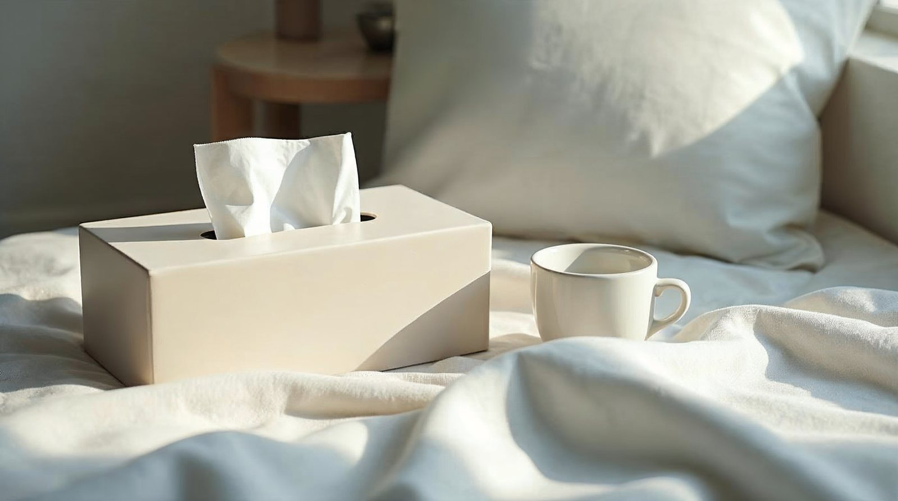
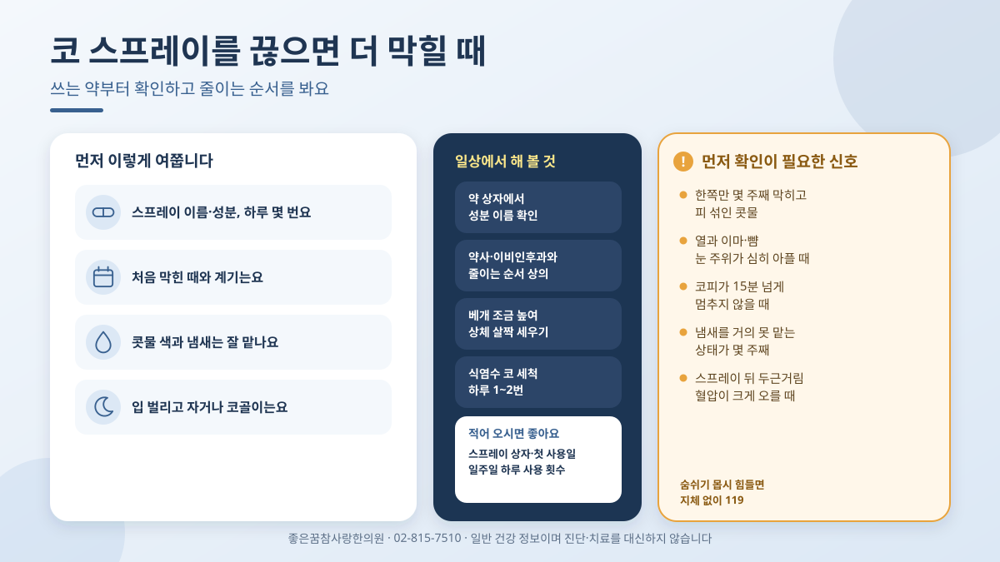

이종호 한의사 감수좋은꿈참사랑한의원 대표원장 (한의사 면허번호 19769)발행 2026-11-27 · 수정 2026-11-27
이 글의 차례
겨울 들어 코가 막혀 약국에서 코에 뿌리는 약을 샀는데, 처음엔 몇 분 만에 뻥 뚫려 편했다가 어느새 하루 서너 번, 자기 전엔 꼭 뿌려야 잠들 수 있게 되셨나요. 그렇다면 약 자체가 코막힘을 이어 가게 만들고 있지 않은지 먼저 살펴볼 때예요.
이렇게 되는 분이 정말 많아요. 의지가 약해서가 아니라, 이 약이 원래 그런 면이 있거든요. 약국 코 스프레이 가운데 옥시메타졸린, 자일로메타졸린처럼 코 점막의 혈관을 수축시키는 성분은 대개 3일 안팎으로 짧게 쓰도록 안내되어 있어요.
이를 넘겨 매일 쓰면 약 기운이 떨어질 때 점막이 더 붓는 반동성 코막힘(약물성 비염)이 생길 수 있어요. 저는 이걸 '뚫림을 미리 빌려 쓰는 것'에 빗대곤 해요. 빌린 만큼 약 기운이 떨어지면 더 꽉 막히는 걸로 돌려받는 거예요.
먼저 쓰고 있는 약 상자를 꺼내 성분과 사용 기간을 확인해 보세요. 이미 일주일 넘게 쓰고 있다면 혼자 갑자기 끊기보다 약사나 이비인후과 의사와 상의해 줄이는 순서를 정하시는 게 덜 힘들어요. 줄이는 동안 며칠은 밤 코막힘이 심할 수 있으니 습도, 베개 높이, 식염수 세척 같은 준비를 미리 해 두시고요.
그리고 '처음 코가 막힌 원인'과 '지금 막히는 원인'은 다른 얘기예요. 알레르기, 건조한 난방, 감기 뒤 부비동 문제 같은 처음 원인도 함께 살펴야 같은 일이 되풀이되지 않아요. 의사가 처방한 스테로이드 코 분무제는 성격이 다른 약이라 임의로 끊지 않습니다.
왜 코 스프레이를 오래 쓰면 오히려 더 막힐까요
- 코 안쪽 점막에는 혈관이 그물처럼 퍼져 있어, 감기나 알레르기, 건조한 공기에 자극을 받으면 혈관이 늘어나고 점막이 부풀어 숨길이 좁아집니다. 혈관수축 성분은 이 혈관을 조여 몇 분 만에 숨길을 넓혀 줍니다.
- 그런데 며칠 넘게 계속 쓰면 점막이 약에 익숙해져 같은 양으로는 덜 뚫리고, 뚫려 있는 시간도 짧아집니다. 약 기운이 떨어지는 시점에는 조였던 혈관이 다시 늘어나며 처음보다 더 붓는 느낌이 들 수 있습니다.
- 그러면 더 자주 뿌리게 되고, 뿌린 직후만 잠깐 뚫렸다 다시 막히는 일이 반복되며 '약 없이는 숨을 못 쉬겠다'는 느낌이 굳어집니다. 이것을 흔히 반동성 코막힘, 또는 약물성 비염이라고 부릅니다.
- 겨울에는 난방으로 실내가 건조해 점막이 쉽게 마르고, 창문을 닫고 지내 집먼지진드기와 먼지에 오래 노출되기 쉬워 처음 코가 막히는 계기가 많습니다.
- 감기 뒤에 코막힘이 열흘 넘게 이어지면 부비동에 염증이 남았을 수도 있는데, 이때 스프레이로만 버티면 원인을 놓치고 사용 기간만 길어지기 쉽습니다.
- 콧속 가운데 벽(비중격)이 한쪽으로 휘어 있거나 물혹이 있는 경우, 일부 혈압약이나 임신 같은 호르몬 변화 때문에도 코가 잘 막힐 수 있어, 약으로 덮어 두기보다 원인을 확인하는 것이 순서입니다.
- 한의학에서는 코막힘을 폐와 코로 이어지는 기운이 막힌 모습으로 보고, 몸이 찬 기운을 잘 견디지 못하는지, 건조함과 열이 위로 뜨는지, 소화와 잠이 함께 흐트러졌는지를 같이 살핍니다.
먼저 이렇게 여쭙니다
- 처음 코가 막히기 시작한 때와 계기(감기, 이사나 대청소, 난방 시작, 반려동물 등)를 여쭙니다.
- 쓰고 있는 코 스프레이의 이름과 성분, 처음 쓴 날, 하루 몇 번 몇 회씩 뿌리는지 여쭙니다. 상자나 설명서를 가져오시면 가장 정확합니다.
- 스프레이를 뿌리고 몇 시간쯤 지나 다시 막히는지, 양쪽이 다 막히는지 한쪽이 더 심한지 여쭙니다.
- 맑은 콧물, 재채기, 눈 가려움이 함께 있는지, 누렇거나 초록빛 콧물이 나오는지, 냄새를 잘 맡는지 여쭙니다.
- 밤에 입을 벌리고 자는지, 코골이가 심해졌는지, 아침에 목이 마르고 머리가 무거운지 여쭙니다.
- 혈압약, 전립선약, 갑상선약, 잠이나 기분에 쓰는 약처럼 복용 중인 약과, 먹는 코감기약을 함께 쓰는지 여쭙니다.
- 고혈압, 심장 질환, 녹내장, 갑상선 질환, 임신처럼 혈관수축 성분을 쓸 때 더 조심해야 하는 상황이 있는지도 확인합니다.

일상에서 먼저 해 볼 수 있는 것
오늘: 쓰고 있는 약부터 확인하기
- 약 상자와 설명서를 꺼내 성분 이름을 적습니다. 옥시메타졸린, 자일로메타졸린, 나파졸린처럼 혈관을 수축시키는 성분이 있는지, '며칠 이상 연속해서 쓰지 말 것' 같은 문구가 있는지 봅니다.
- 의사가 처방한 스테로이드 코 분무제나 식염수 스프레이라면 성격이 다른 약입니다. 헷갈리면 약을 산 약국에 사진을 보여 주고 물어보세요.
- 지난 일주일 동안 하루 몇 번 뿌렸는지 기억나는 대로 적어 둡니다. 이 숫자가 줄이는 계획의 출발점이 됩니다.
이번 주: 줄이는 순서를 상의하고 날짜 정하기
- 혈관수축 성분을 일주일 넘게 매일 쓰고 있다면 약사나 이비인후과 의사에게 지금 쓰는 횟수를 알리고 줄이는 방법을 상의합니다. 한쪽 콧구멍부터 먼저 끊어 보는 방법이나, 처방 분무제로 바꿔 가며 줄이는 방법을 안내받기도 합니다.
- 끊기 시작하는 날은 다음 날 아침 일정이 여유로운 금요일 밤이나 연휴 앞, 연차 전날로 잡습니다. 처음 3~7일은 밤에 코가 더 막혀 잠이 얕을 수 있기 때문입니다.
- 끊는 동안 먹는 코감기약을 대신 늘리지 않습니다. 먹는 약에도 혈관수축 성분이 들어 있는 경우가 있어 혈압이 오르거나 잠이 더 안 올 수 있으니 약사와 함께 확인합니다.
밤: 막힌 코로 잠드는 준비
- 잠들기 1시간 전에 미지근한 물로 샤워를 하거나, 따뜻하게 적신 수건을 코와 뺨 위에 2~3분 올려 김을 쐬면 코 안이 조금 편하다는 분이 많습니다.
- 베개를 평소보다 조금 높이거나 등 아래에 쿠션을 받쳐 상체를 살짝 세웁니다. 완전히 누운 자세에서는 머리 쪽으로 피가 몰려 점막이 더 붓기 쉽습니다.
- 침실 습도는 40~60%를 목표로 하고, 가습기를 쓴다면 물을 매일 갈고 통을 자주 씻습니다. 난방 온도를 1~2도 낮추는 것만으로도 건조함이 줄어듭니다.
- 저녁 술은 코 점막을 붓게 하기 쉬워 줄이는 기간에는 피하는 편이 좋습니다. 늦은 야식도 위산이 올라와 목과 코를 자극할 수 있습니다.
- 한쪽만 막히면 막힌 쪽이 위로 가게 옆으로 누워 보세요. 코가 몇 시간 간격으로 번갈아 막히는 것은 원래 몸의 자연스러운 리듬이기도 합니다.
낮: 코를 편하게 하는 습관
- 식염수 코 세척은 하루 1~2번, 미지근한 생리식염수나 세척용 분말을 녹인 물로 합니다. 끓이지 않은 수돗물을 그대로 쓰지 않고, 세척 도구는 쓸 때마다 씻어 말립니다.
- 코를 풀 때는 한쪽씩 막고 살살 풉니다. 양쪽을 한꺼번에 세게 풀면 귀가 먹먹해지거나 코피가 날 수 있습니다.
- 외출할 때 마스크나 목도리로 코와 입을 가려 찬 공기가 바로 들어오지 않게 합니다.
- 아침, 점심 뒤, 저녁에 10~20분씩 걷습니다. 몸을 움직이고 나면 잠시 코가 덜 막히는 느낌을 받는 분이 많습니다.
- 침구는 1~2주에 한 번 뜨거운 물로 빨고, 이불을 털 때는 창을 열고 마스크를 씁니다.
혈관수축 스프레이와 다른 코 분무제는 어떻게 다를까요
- 혈관수축 스프레이는 몇 분 만에 코를 뚫어 주지만 짧게 쓰는 약입니다. 감기 초반이나 비행기 탑승 전처럼 며칠만 잠깐 필요한 상황을 생각하고 만든 약이라고 이해하면 쉽습니다.
- 스테로이드 분무제는 점막의 염증을 가라앉히는 약으로, 약 기운이 자리 잡기까지 며칠이 걸리고 알레르기 비염 등에 꾸준히 쓰도록 처방되는 경우가 많습니다. 반동성 코막힘과는 성격이 다릅니다.
- 항히스타민 분무제는 재채기와 맑은 콧물, 가려움 쪽에 쓰이는 경우가 많고, 처방에 따라 씁니다.
- 식염수 스프레이와 코 세척은 약 성분이 없어 코 안을 촉촉하게 하고 분비물을 씻어 내는 용도로 씁니다.
- 겉모양이 비슷한 병이라도 성분이 다르므로, 가족이 쓰던 스프레이를 나눠 쓰지 말고 각자 성분을 확인합니다.
상황별 예시
- 예를 들어 감기 끝에 코막힘이 남아 약국 스프레이를 쓰기 시작한 직장인이 3주째 자기 전과 새벽에 한 번씩 뿌리지 않으면 잠들지 못하는 경우, 약 상자를 들고 약사나 이비인후과에서 줄이는 순서를 상의합니다. 감기 뒤 열흘 넘게 누런 콧물과 얼굴 압박감이 있었다면 부비동 문제도 함께 확인합니다.
- 예를 들어 노량진 독서실 난방에 코가 바짝 마르고 막혀 하루 대여섯 번 스프레이를 쓰게 된 수험생이라면, 마스크를 쓰고 쉬는 시간마다 물을 마시며 코 세척을 아침저녁으로 하는 것부터 해 봅니다. 시험 일정이 가까우면 끊기 시작하는 날을 시험 뒤로 잡을지 약사와 상의합니다.
- 예를 들어 혈압약을 드시는 60대가 겨울마다 코가 막혀 자녀가 사다 드린 스프레이를 매일 쓰고 계신 경우, 혈관수축 성분이 혈압에 영향을 줄 수 있어 처방받는 내과나 약국에 먼저 알리고, 코막힘의 원인을 따로 확인하는 편이 안전합니다.
- 예를 들어 아침마다 재채기와 맑은 콧물로 시작해 낮에는 코가 막히는 분이 스프레이로 버티고 있다면, 알레르기 비염일 가능성을 두고 침구 관리와 실내 환경을 먼저 정리하고, 필요하면 병원에서 알레르기 검사와 치료를 상의합니다.
자주 하는 오해
- 코 스프레이는 다 똑같다고 여기는 분이 많지만, 혈관수축제, 스테로이드 분무제, 항히스타민 분무제, 식염수 스프레이는 쓰는 목적과 기간이 다릅니다. 처방받은 스테로이드 분무제는 꾸준히 써야 하는 경우가 많아 혈관수축제처럼 짧게 끊는 약이 아닙니다.
- 막히면 뿌리고 뚫리면 쉬니 괜찮다고 생각하기 쉽지만, 하루 한 번이라도 매일 이어 쓰면 반동성 코막힘이 생길 수 있습니다.
- 끊으면 바로 편해진다고 기대하기도 합니다. 실제로는 처음 며칠 오히려 더 막힌 느낌이 들다가 점막이 회복되며 차츰 숨길이 넓어지는 경우가 많아, 이 시기를 미리 알고 준비하는 것이 중요합니다.
- 코막힘은 그냥 체질이라 어쩔 수 없다고 포기하는 분도 있습니다. 알레르기, 건조한 환경, 콧속 구조, 복용 약처럼 확인할 수 있는 원인이 있는 경우가 많습니다.
- 코가 막히면 입으로 숨 쉬면 된다고 여기기 쉽지만, 밤새 입으로 숨 쉬면 목이 마르고 잠이 얕아지며 아침 두통으로 이어지기도 합니다.

스스로 점검해 보세요
- 약국에서 산 코 스프레이를 일주일 넘게 거의 매일 쓰고 있다.
- 뿌리고 나서 다시 막히기까지 시간이 처음보다 짧아졌다.
- 자기 전에 뿌리지 않으면 잠들기 어렵거나, 새벽에 다시 뿌리려고 깬다.
- 가방이나 주머니, 침대 옆에 스프레이를 늘 두고 다닌다.
- 처음보다 하루 뿌리는 횟수가 늘었다.
- 코 안이 화끈하거나 따갑고, 딱지나 피 섞인 콧물이 자주 생긴다.
- 쓰는 약의 성분과 권장 사용 기간을 모른다.
한의원에서 함께 살필 수 있는 경우
- 스프레이를 줄이는 동안 밤 코막힘과 얕은 잠, 아침 두통이 함께 힘든 경우
- 병원에서 큰 구조 문제는 없다고 들었는데 겨울마다 코막힘이 되풀이되는 경우
- 코막힘과 함께 손발이 차고 추위를 많이 타거나, 소화가 더디고 잘 붓는 경우
- 입마름, 목 칼칼함, 얼굴로 열이 오르는 느낌처럼 건조함과 열감이 같이 있는 경우
좋은꿈참사랑한의원에서는 첫 방문 때 코가 언제, 어떤 계기로 막히기 시작했는지와 지금 쓰는 스프레이의 성분과 횟수를 먼저 여쭙니다. 그다음 맥부터 짚어 몸의 찬 기운과 열, 기운의 정도를 살피고, 혀와 배를 함께 보아 건조함과 소화 상태, 몸에 수분이 정체되는 모습이 있는지 확인합니다.
잠, 대소변, 땀, 손발 온도처럼 코와 멀어 보이는 이야기도 함께 여쭙는 것은 코막힘이 몸 전체의 리듬 속에서 드러나는 경우가 많기 때문입니다. 그 위에서 침실 습도와 베개, 코 세척 시간 같은 생활 조절을 함께 정하고, 침이나 한약 같은 한방 진료를 더할지 상의합니다.
스프레이를 줄이는 방법과 속도는 약사나 이비인후과와 상의한 내용을 우선으로 하고, 콧속 구조나 부비동 확인이 필요해 보이면 이비인후과 진료를 먼저 권해 드립니다. 다시 오시면 지난번 이후 스프레이 횟수와 밤잠 기록을 이어서 봅니다.
얼마나 지켜보고 언제 상담할까요
- 혈관수축 스프레이를 끊고 나서 처음 3~7일은 더 막힌 느낌이 들 수 있습니다. 이 기간에는 밤 준비를 꾸준히 하며 지켜봅니다.
- 끊은 지 2주가 지나도 코막힘이 그대로이거나 오히려 심해진다면, 처음 원인(알레르기, 부비동, 구조 문제)을 확인하러 이비인후과 진료를 받아 보세요.
- 혼자 줄이려다 사흘을 넘기지 못하고 다시 쓰게 되는 일이 두세 번 반복되면, 줄이는 방법을 약사나 의사와 다시 상의할 때입니다.
- 아래 신호가 있으면 기다리지 말고 진료를 먼저 받습니다.
이렇게 기록해 오시면 상담이 쉬워집니다
스프레이를 몇 번 뿌렸는지는 생각보다 기억이 잘 안 나요. 습관처럼 손이 가거든요. 그래서 상자 사진과 하루 횟수만 남겨 두셔도 줄이는 순서를 정하는 데 큰 도움이 돼요.
- 쓰고 있는 코 스프레이 상자나 사진(성분 이름이 보이게)
- 처음 사용한 날과 지난 일주일의 하루 사용 횟수
- 밤에 깬 횟수, 입 벌리고 잔 날, 아침 두통 여부
- 콧물 색과 양, 냄새를 맡는 정도, 한쪽이 더 막히는지
- 복용 중인 약(혈압약, 먹는 감기약 포함)과 지병
- 침실 온도와 습도, 가습기나 공기청정기 사용 여부
일주일 치만 모여도 횟수가 어느 시간대에 몰리는지가 보여요. 밤에 몰리는지, 출근 전에 몰리는지에 따라 줄이는 순서와 그 시간대의 준비가 달라지거든요.
코와 몸 전체를 살피는 건 제가 맡을게요. 대신 하나만 부탁드려요. 스프레이를 뿌릴 때마다 달력에 작은 표시 하나만 해 주세요. 그거 하나예요. 딴 건 하시던 대로 편하게 하셔도 돼요.
줄이는 것도 한 번에 세게 하기보다 천천히, 하나씩이에요. 궁금한 건 오셔서 그냥 편하게 물어보세요. 약 상자와 달력을 같이 놓고 보겠습니다.
이런 증상은 먼저 확인이 필요합니다
- 한쪽 코만 몇 주째 막히면서 피 섞인 콧물이나 고약한 냄새가 나는 경우
- 열이 나고 이마나 뺨, 눈 주위가 심하게 아프거나, 눈두덩이 붓고 시야가 흐려지는 경우
이런 신호가 있으면 한의원보다 가까운 병원이나 응급실을 먼저 찾으세요.
관련 글
- 코가 막힌 것인지 콧물이 목으로 넘어가는 것인지 어떻게 구분해 말하나요?
- 자고 일어나면 입이 바짝 마르고 목이 칼칼할 때는 어떻게 살피나요?
- 아침에 일어나자마자 재채기와 맑은 콧물이 쏟아질 때는 어떻게 살피나요?

여쭙는 것
- 처음 코가 막히기 시작한 때와 계기(감기, 이사나 대청소, 난방 시작, 반려동물 등…
- 쓰고 있는 코 스프레이의 이름과 성분, 처음 쓴 날, 하루 몇 번 몇 회씩 뿌리는지…
- 스프레이를 뿌리고 몇 시간쯤 지나 다시 막히는지, 양쪽이 다 막히는지 한쪽이 더 심…
생활에서 해 볼 것
- 약 상자와 설명서를 꺼내 성분 이름을 적습니다. 옥시메타졸린, 자일로메타졸린, 나파…
- 의사가 처방한 스테로이드 코 분무제나 식염수 스프레이라면 성격이 다른 약입니다. 헷…
- 지난 일주일 동안 하루 몇 번 뿌렸는지 기억나는 대로 적어 둡니다. 이 숫자가 줄이…
한의원에서 함께 살필 것
- 스프레이를 줄이는 동안 밤 코막힘과 얕은 잠, 아침 두통이 함께 힘든 경우
- 병원에서 큰 구조 문제는 없다고 들었는데 겨울마다 코막힘이 되풀이되는 경우
- 코막힘과 함께 손발이 차고 추위를 많이 타거나, 소화가 더디고 잘 붓는 경우
먼저 확인이 필요한 신호
- 한쪽 코만 몇 주째 막히면서 피 섞인 콧물이나 고약한 냄새가 나는 경우
- 열이 나고 이마나 뺨, 눈 주위가 심하게 아프거나, 눈두덩이 붓고 시야가 흐려지는 경우
한눈에 보는 표
| 구분 | 핵심 |
|---|---|
| 여쭙는 것 | 처음 코가 막히기 시작한 때와 계기(감기, 이사나 대청소, 난방 시작, 반려동물 등)를 여쭙니다. 쓰고 있는 코 스프레이의 이름과 성분, 처음 쓴 날, 하루 몇 번 몇 회씩 뿌리는지 여쭙니다. 상자나 설명서를 가져오시면 가장 정확합니다. |
| 생활에서 해 볼 것 | 약 상자와 설명서를 꺼내 성분 이름을 적습니다. 옥시메타졸린, 자일로메타졸린, 나파졸린처럼 혈관을 수축시키는 성분이 있는지, '며칠 이상 연속해서 쓰지 말 것' 같은 문구가 있는지 봅니다. 의사가 처방한 스테로이드 코 분무제나 식염수 스프레이라면 성격이 다른 약입니다. 헷갈리면 약을 산 약국에 사진을 보여 주고 물어보세요. |
| 한의원에서 함께 살필 것 | 스프레이를 줄이는 동안 밤 코막힘과 얕은 잠, 아침 두통이 함께 힘든 경우 병원에서 큰 구조 문제는 없다고 들었는데 겨울마다 코막힘이 되풀이되는 경우 |
| 먼저 확인이 필요한 신호 | 한쪽 코만 몇 주째 막히면서 피 섞인 콧물이나 고약한 냄새가 나는 경우 열이 나고 이마나 뺨, 눈 주위가 심하게 아프거나, 눈두덩이 붓고 시야가 흐려지는 경우 |
자주 묻는 질문
약국 코 스프레이는 며칠까지 써도 되나요?
혈관을 수축시키는 성분의 스프레이는 제품 설명서에 대개 3일 안팎의 짧은 사용 기간이 적혀 있습니다. 제품마다 다르므로 설명서를 확인하고, 그보다 길게 써야 할 것 같다면 약사나 의사와 먼저 상의해 주세요.
병원에서 받은 코 분무제도 똑같이 끊어야 하나요?
처방받은 스테로이드 분무제는 혈관수축제와 성격이 달라 꾸준히 쓰도록 안내받는 경우가 많습니다. 임의로 끊지 말고 처방한 의사에게 사용 기간을 확인하세요.
식염수 스프레이나 코 세척도 오래 하면 문제가 되나요?
식염수는 혈관수축 성분이 없어 반동성 코막힘과는 거리가 멉니다. 다만 세척 도구를 깨끗이 관리하고, 끓이지 않은 수돗물을 그대로 쓰지 않으며, 귀가 먹먹해지면 세기를 줄이세요.
끊으면 얼마나 지나야 숨쉬기가 편해지나요?
사람마다 다르지만 처음 며칠은 더 막힌 느낌이 들다가 1~2주에 걸쳐 차츰 회복되는 경우가 많습니다. 2주가 지나도 그대로라면 처음 원인을 확인하러 진료를 받아 보세요.
스프레이를 줄이는 동안 한의원 진료를 같이 받아도 되나요?
함께 받으실 수 있습니다. 줄이는 방법은 약사나 이비인후과와 상의한 내용을 우선으로 하고, 한의원에서는 밤잠과 몸의 찬 기운, 건조함 같은 생활 쪽을 함께 살핍니다. 쓰는 약은 진료 때 모두 알려 주세요.
좋은꿈참사랑한의원은 재진 때 지난번 이야기부터 이어서 여쭙니다. 진료시간과 예약은 오시는 길에서 확인하세요.
어디서 상담받을 수 있나요?
좋은꿈참사랑한의원은 서울 동작구 만양로2길 2 신성빌딩 3층·5층(서울 동작구 상도동, 7호선 상도역 3번 출구 근처)에 있습니다. 한의사 3명(이종호 대표원장, 조영기 수석진료원장, 정원영 진료원장)이 진료합니다. 진료시간은 평일 09:30~20:00(점심 13:00~14:00), 토·일·공휴일 09:30~15:00이며, 방문 전 전화로 확인을 권합니다. 예약은 네이버 예약, 카카오톡 상담, 전화 02-815-7510로 받습니다.
이 글은 일반적인 건강 정보이며 개인의 진단이나 치료를 대신하지 않습니다. 증상이 있거나 복용 중인 약이 있다면 진료를 통해 확인하세요. 치료 효과는 개인마다 다를 수 있습니다.
작성 기준: 일반적으로 알려져 있는 건강 정보를 참고해 정리했습니다(대표원장 감수). 증상 기록은 1~2주 동안 하루 1회, 비슷한 시간에 적어 오시면 지난 상태와 비교하기 쉽습니다.